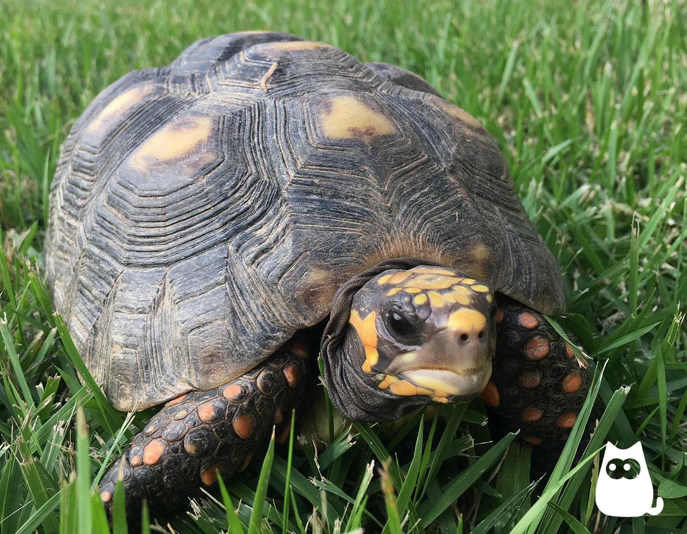

No elegimos a un amigo por su estatura, su color o su nombre.
Lo elegimos por la afinidad que tenemos con él y tener una relación sincera y duradera.
-
 Patricio
PatricioUn conejito muy tierno, tiene 2 años de edad, le gusta saltar y comer zanahorias, adora que lo acaricien. Está buscando una familia que lo ame y lo concienta mucho
-
Dulce
Es una conejita muy amigable y dulce. Le gusta mucho que le den amor y es muy juguetona
-
Diamond
Es un gatito un poco asustadizo pero cuando coge confianza es muy jugueton. Le gusta mucho comer y tambien que los saquen a pasear. El esta listo para tener una familia que le de mucho amor
-
Silver
Es una gatita que fue rescata y no les gustaba que la tocaran mucho. Ahora le encanta que le den den muchos abrazos y le gustan dormir apapachados. Sin duda en una buena companera para tu familia
-
 Coco
CocoCoco le encanta mucho comer y estar todo el tiempo en su caminadora. Le gusta mucho que lo suelten y curiosear alrededor de donde se encuentra
-
Canelo
Este hamster no se encontraba en muy buenas condiciones cuando fue rescado estaba muy delgado y no le gustaba jugar. Ahora es un hamster muy feliz que le encanta comer
-
 Sunny
SunnyDisfruta mucho de la presencia del humano, aunque también muestra interés en otras aves. Le gusta mucho cantar y decir algunas palabras
-
Riku
Es una macho muy curioso que en este tiempo ha vivido en un ambiente estimulado y enriquecido. Le gusta mucho compartir con otras aves
-
 Benito
BenitoBenito busca hogar üêæüíìüè° √âl tiene 4 a√±os, pesa 20 kilos y es mediano. Es muy activo, juguet√≥n y cari√±oso. Le gusta salir a caminar y los premios. Se pone territorial con su comida. Está sano, vacunado y castrado
-
 Bianca
BiancaEstá 100% sana ‚úÖÔ∏è y busca un hogar amoroso üíì tiene mucha energ√≠a! Le encanta correr y jugar.Es muy activa, traviesa, curiosa, muy amorosa y comelona üòä Su familia ideal debe ser activa para que disfruten juntos de sus juegos, correteos y rutina diaria de muchos paseos.
-
Mimi
A Mimi le gusta mucho esconderse entre la tierra y tambien en un poco de agua. Le gusta estar al aire libre y dormir mucho
-
 Moi
MoiMoi es una tortuga muy tranquila.Le gusta comer mucho las hojas, flores, semillas y frutos.Le gusta mucho que siempre le esten brindando atencion